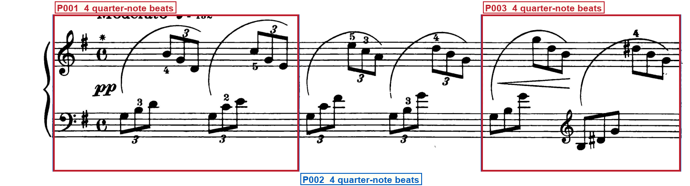
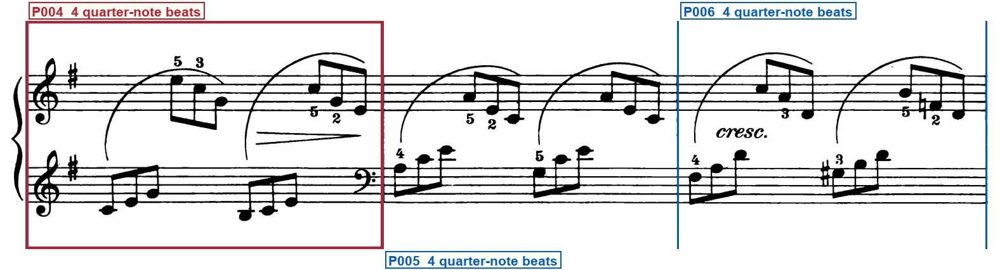
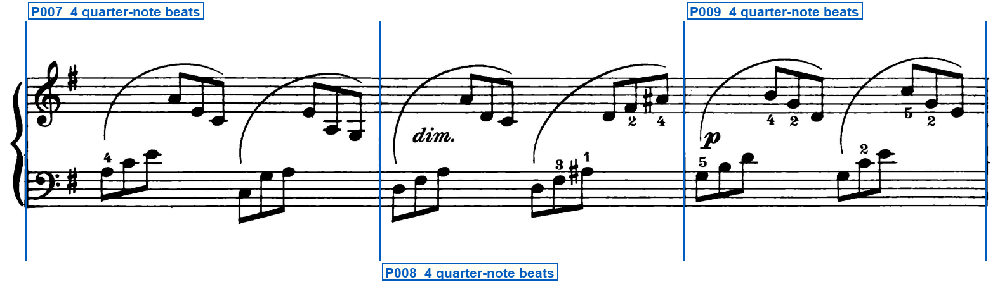
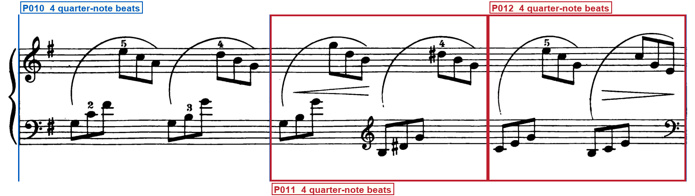
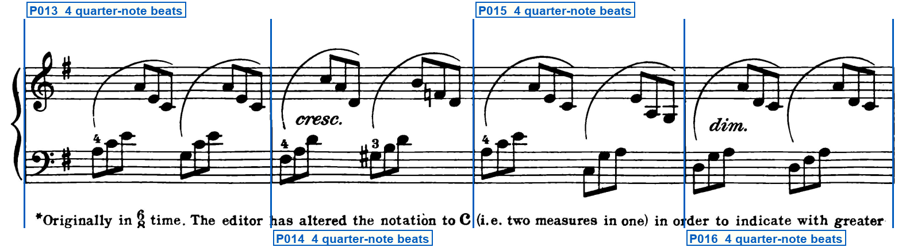
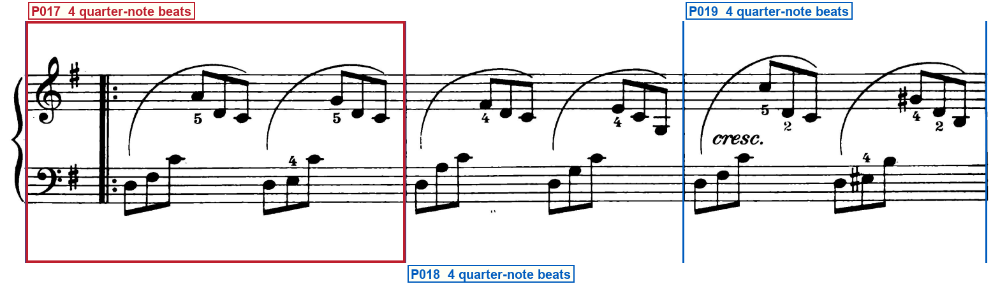
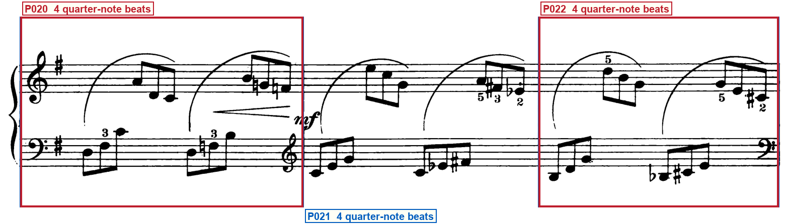
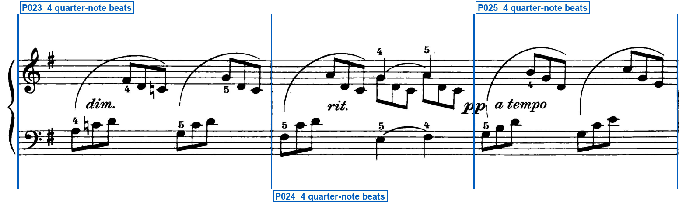
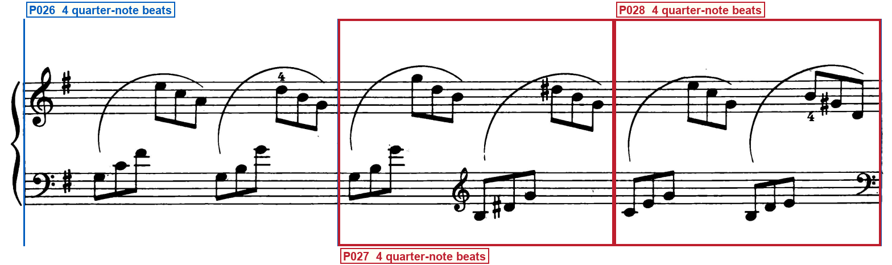
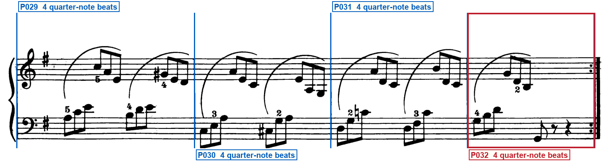

Printed-frame check
schumann_op68_14_little_study
Blue regions are silent: verify that they are ordinary bars. Red regions have one compact label directly below their system. Blue vertical lines must sit on printed barlines. Labels must remain outside the music.
System 1 — 3 printed regions

- P001 — OPENING SIGNATURE — At the left of the system
- P003 — CLEF CHANGE — After the first left-hand bass group · staff 2: bass clef → treble clef; glyph After the first left-hand bass group and the first right-hand triplet, before the D, G-sharp, and B; effective P003; first governed event: The left-hand D, G-sharp, and B of P003
System 2 — 3 printed regions

- P004 — CLEF CHANGE — At the left of the system · Immediately left of the right barline · staff 2: treble clef → treble clef; glyph At the left of system 2, after the brace and left barline; effective P004; first governed event: The first left-hand treble inner-voice group of P004 · staff 2: treble clef → bass clef; glyph Immediately left of the barline between P004 and P005; effective P005; first governed event: The left-hand C-E inner-voice group of P005
System 3 — 3 printed regions

System 4 — 3 printed regions

- P011 — CLEF CHANGE — After the first left-hand bass group · staff 2: bass clef → treble clef; glyph After the first left-hand bass group of P011, before the D, G-sharp, and B; effective P011; first governed event: The left-hand D, G-sharp, and B of P011
- P012 — CLEF CHANGE · CAUTIONARY CLEF — Immediately left of the right barline · At the right end of the system · staff 2: treble clef → bass clef; glyph Immediately left of the right barline of P012; effective P013; first governed event: The first left-hand bass inner-voice group of P013
System 5 — 4 printed regions

System 6 — 3 printed regions

- P017 — REPEAT START — After the key signature
System 7 — 3 printed regions

- P020 — CLEF CHANGE — Immediately left of the right barline · staff 2: bass clef → treble clef; glyph Immediately left of the barline between P020 and P021; effective P021; first governed event: The first left-hand treble inner-voice group of P021
- P022 — CLEF CHANGE · CAUTIONARY CLEF — Immediately left of the right barline · At the right end of the system · staff 2: treble clef → bass clef; glyph Immediately left of the right barline of P022; effective P023; first governed event: The first left-hand bass inner-voice group of P023
System 8 — 3 printed regions

System 9 — 3 printed regions

- P027 — CLEF CHANGE — After the first left-hand bass group · staff 2: bass clef → treble clef; glyph After the first left-hand bass group of P027, before the D, G-sharp, and B; effective P027; first governed event: The left-hand D, G-sharp, and B of P027
- P028 — CLEF CHANGE · CAUTIONARY CLEF — Immediately left of the right barline · At the right end of the system · staff 2: treble clef → bass clef; glyph Immediately left of the right barline of P028; effective P029; first governed event: The first left-hand bass inner-voice group of P029
System 10 — 4 printed regions

- P032 — REPEAT END · FINAL BARLINE — At the right barline · At the right barline
Full clef inventory
Staff 1 opens in treble and staff 2 in bass. Nine later left-hand clefs are printed: treble at beat 3 of P003, treble at the start of system 2, bass immediately left of the P004/P005 barline, treble at beat 3 of P011, cautionary bass at the end of P012, treble immediately left of the P020/P021 barline, cautionary bass at the end of P022, treble at beat 3 of P027, and cautionary bass at the end of P028. No other clef changes are printed.
Opening clefs
- Staff 1: treble clef — Opening of system 1
- Staff 2: bass clef — Opening of system 1
Printed clef changes (9)
- P003, staff 2: treble clef — P003, staff 2: bass clef to treble clef at beat 3, before the D, G-sharp, and B
- P004, staff 2: treble clef — P004, staff 2: treble clef reprinted at the start of system 2
- P005, staff 2: bass clef — P004, staff 2: treble clef to bass clef immediately left of the P004/P005 barline; first event in P005
- P011, staff 2: treble clef — P011, staff 2: bass clef to treble clef at beat 3, before the D, G-sharp, and B
- P012, staff 2: bass clef — P012, staff 2: treble clef to bass clef cautionary at the system 4 close; first event in P013
- P020, staff 2: treble clef — P020, staff 2: bass clef to treble clef immediately left of the P020/P021 barline; first event in P021
- P022, staff 2: bass clef — P022, staff 2: treble clef to bass clef cautionary at the system 7 close; first event in P023
- P027, staff 2: treble clef — P027, staff 2: bass clef to treble clef at beat 3, before the D, G-sharp, and B
- P028, staff 2: bass clef — P028, staff 2: treble clef to bass clef cautionary at the system 9 close; first event in P029
Verifier notes and special checks
Isolation confirmed: only request.json, request_freeze.json, the hashed print PDF, page and system crops, and the hashed proposed print-only frame artifacts were read. No readers, LEGATO, source observations, candidates, MusicXML, provenance, disagreements, Astra reviews, archives, or prior musical verdicts were accessed. The print has thirty-two barline-bounded regions on two pages (three plus three plus three plus three plus four on page 1; three plus three plus three plus three plus four on page 2). Both staves open with a common-time C glyph; every region is a full four-beat common-time bar, including systems 5 and 10, whose interleaved left-hand and right-hand triplet groups fill four quarter-note beats. No pickup or partial bars are printed. A forward repeat opens P017 after the signatures on system 6. P032 ends with a backward repeat that is also the final barline. Staff 1 stays in treble. Staff 2 opens in bass, then prints nine later clefs: treble at beat 3 of P003, treble at the start of system 2, bass immediately left of the P004/P005 barline, treble at beat 3 of P011, cautionary bass at the end of P012, treble immediately left of the P020/P021 barline, cautionary bass at the end of P022, treble at beat 3 of P027, and cautionary bass at the end of P028. Proposed region counts, capacities, repeats, and clef machine fields match the print.
- Whole piece: Are any pickup or partial bars printed? No. Every one of the thirty-two barline-bounded regions is a full four-beat common-time bar. The rests at the end of P032 sit inside that full bar, before the backward repeat.
- System 1 opening and system 5 footnote: Is common-time C the only staff meter, and is the system 5 footnote a second staff meter? Common-time C is printed on both staves at the opening and is the only staff meter. The system 5 footnote is editorial text under the staff, not a meter glyph and not a barline.
- System 5 P013-P016: Are the four regions on system 5 full four-beat common-time bars rather than six-eighth spans? Yes. Each of the four barline-bounded regions has interleaved left-hand and right-hand triplet groups filling four quarter-note beats.
- System 10 P029-P032: Are the four regions on system 10 full four-beat common-time bars rather than six-eighth spans? Yes. Each region is a full common-time bar. P032 keeps the remaining beats as printed rests before the backward repeat.
- System 1 P003 staff 2: Does the left-hand treble in P003 precede the D, G-sharp, and B group at beat 3? Yes. After the first left-hand bass group and the first right-hand triplet, the G clef sits at beat 3, then D, G-sharp, and B. Glyph centre x=1320 lies in P003 (1099-1554).
- System 6 P017: Is there a forward repeat at the start of P017 after the signatures, and is P017 a full bar rather than a pickup? Yes. After the treble, bass, and one-sharp key, dots sit to the right of a thick-thin barline on both staves. The following music is a full four-beat common-time bar.
- System 10 P032: Does the final barline show backward-repeat dots on the left of a thick close? Yes. Dots to the left only, then a thin-thick close. No dots to the right. That close is the right boundary of P032.
Your verification checks
- Do all staves, notes, rests, slurs and other musical marks fit completely inside the page?Expected: Yes
- Do the blue lines match every printed barline, giving 32 printed regions?Expected: Yes
- Do the compact red labels state every visible repeat, ending, route mark, special barline, partial, meter/key change and clef change—and are all unlabeled blue regions truly normal?Expected: Yes
- Are all region labels outside the printed system, with no ending, repeat, clef, note or mark hidden?Expected: Yes
- Does the clef list state each opening clef and every visible clef change?Expected: Yes
Approve only after every answer is Yes. Tell the Orchestrator: Frame approved or Frame rejected with the system number.